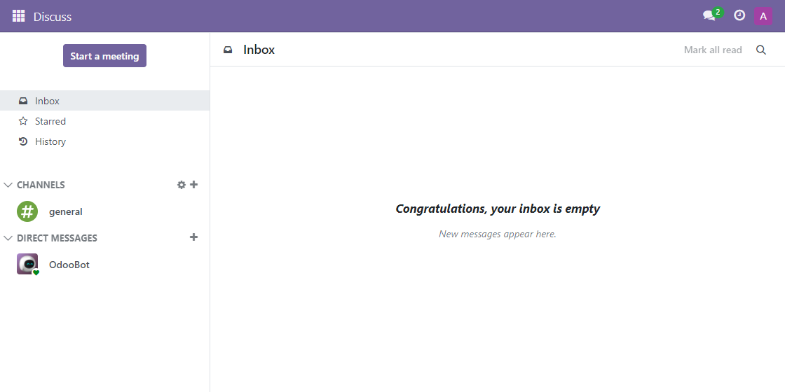
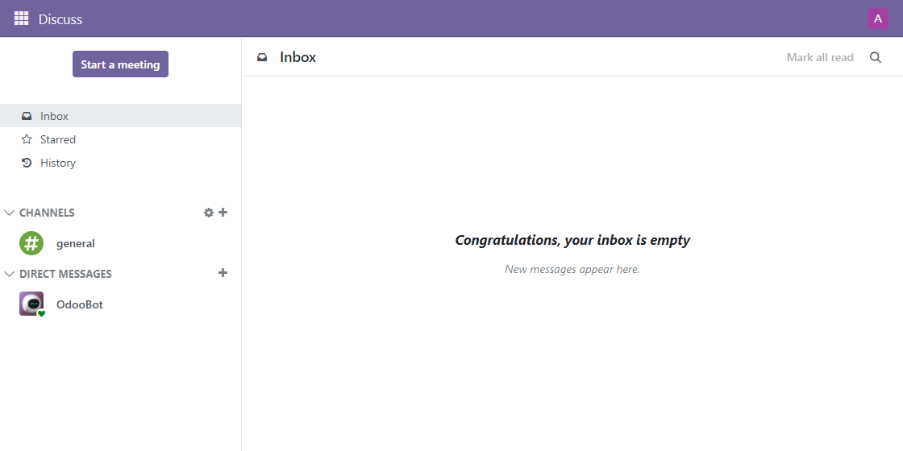

Remove Discuss Activity Icon is a simple module that removes the activity icon from the top right corner of the discuss chat window.


If you're interested in contributing, please visit the GitHub repository @ github.com/VictorHachard/odoo-modules
If you encounter any issues, please visit the GitHub repository issue section @ github.com/VictorHachard/odoo-modules/issues
Developed and maintained by HVG Solutions. For help, a custom development or an Odoo project, contact us at contact@hvg-solutions.com.